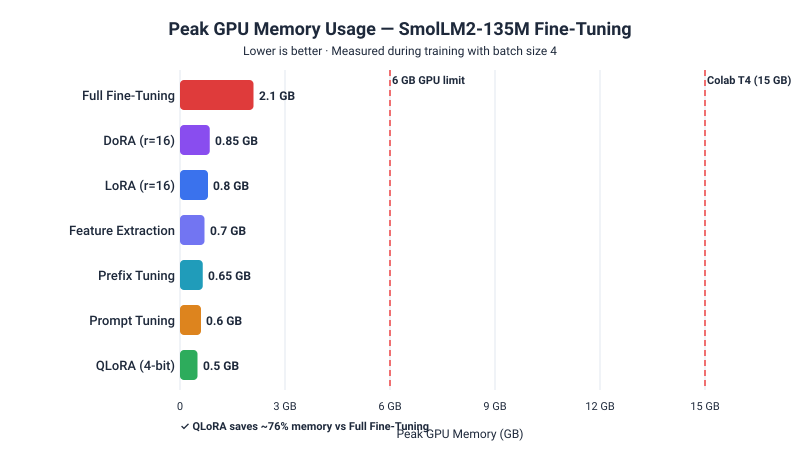

Full Fine-Tuning
The OG. The brute-force champion. The "I have compute and I'm not afraid to use it" approach.
🔥 What is Full Fine-Tuning?
Full fine-tuning means you take a pre-trained model and update every single parameter on your task-specific data. All the weights, all the layers, all the attention heads — everything gets a chance to learn from your dataset.
It's conceptually the simplest approach: you already have weights that "know language" from pre-training, and you continue gradient descent on your data. The model's entire capacity is available to adapt to your task.
Think of it like remodeling an entire house. Sure, the foundation is solid (pre-trained knowledge), but you're repainting every room, replacing the fixtures, and maybe knocking out a wall or two. It's thorough — but it's also expensive and you might accidentally damage the plumbing. 🏠🔨
✅ When to Use
- ● Small models (≤500M params) — memory is manageable, training is fast
- ● Maximum task quality needed — you want every last drop of performance
- ● Sufficient compute available — you have the GPU VRAM and time
- ● Your task differs significantly from pre-training — the model needs deep adaptation
- ● You only need one model — not serving multiple adapters
❌ When NOT to Use
- ● Large models (>1B params) — VRAM goes brrr and your wallet goes 😭
- ● Limited VRAM — full FT of a 1B model needs ~12GB+ just for optimizer states
- ● Risk of catastrophic forgetting — the model "forgets" its original capabilities
- ● Small dataset — overfitting is almost guaranteed with few examples
- ● Multi-tenant serving — you can't easily swap full models per user
⚙️ How it Works
The recipe is beautifully simple (which is part of the appeal):
- 1 Load pre-trained weights — start from a checkpoint that already understands language structure
- 2 Prepare your dataset — tokenize, format, and batch your task-specific data
- 3 Run gradient descent — backprop through ALL layers, updating every parameter
- 4 Save the entire model — the result is a completely new set of weights (same architecture, different values)
💡 Key insight: Unlike LoRA (which learns a small "diff"), full fine-tuning produces a model that's the same size as the original but with completely different parameter values. You can't easily merge it or swap between tasks — it's a whole new model.
🎛️ Key Parameters
These are the knobs you'll be turning. Get them wrong and your model either doesn't learn or learns to produce hot garbage.
| Parameter | Typical Range | Why It Matters |
|---|---|---|
| Learning Rate | 1e-5 → 5e-5 |
Too high = catastrophic forgetting. Too low = your model naps through training. |
| Epochs | 1 → 5 |
More passes = more memorization. For small datasets, even 3 epochs can overfit. |
| Batch Size | 4 → 32 |
Larger = smoother gradients, more VRAM. Smaller = noisier but fits in memory. |
| Warmup Steps | 5%–10% of total |
Lets the optimizer "ease in" instead of yeeting gradients at full speed immediately. |
| Weight Decay | 0.01 → 0.1 |
Regularization to prevent overfitting. Think of it as a "don't go too crazy" tax. |
| Max Seq Length | 512 → 2048 |
VRAM scales quadratically with attention. Longer context = exponentially more memory. |
💾 Memory Requirements
Full fine-tuning is the most memory-hungry technique. Here's why: you need to store the model weights, the gradients, and the optimizer states (Adam keeps two momentum buffers per parameter). That's roughly 4× the model size in VRAM.
📐 Quick math for FP32 training:
- Model weights: 4 bytes × params
- Gradients: 4 bytes × params
- Optimizer states (Adam): 8 bytes × params
- Activations: varies with batch size & seq length
- Total ≈ 16–20 bytes per parameter (before activations)

| Model Size | FP32 VRAM | BF16 VRAM | Fits on… |
|---|---|---|---|
| 135M (SmolLM2) | ~2.5 GB | ~1.5 GB | Any modern GPU, even Colab free tier 🎉 |
| 360M (SmolLM2) | ~6 GB | ~3.5 GB | RTX 3060 / T4 |
| 1.7B (SmolLM2) | ~28 GB | ~16 GB | A100 / RTX 4090 (tight) |
| 7B | ~112 GB | ~56 GB | Multi-GPU or DeepSpeed ZeRO 🔥 |
⚠️ Common Pitfalls
Full fine-tuning is powerful but unforgiving. Here's where people (including me, repeatedly) shoot themselves in the foot:
🧠 Catastrophic Forgetting
The model becomes great at your task but forgets how to do basic things. Like teaching someone advanced calculus and they forget how to add.
Fix: Mix in a small fraction (5–10%) of general-purpose data during training. Use a low learning rate. Evaluate on diverse benchmarks, not just your task.
📈 Overfitting
With all parameters free to move, the model can easily memorize your training set verbatim — especially if it's small. Your training loss looks beautiful; your validation loss tells a horror story.
Fix: Use weight decay, reduce epochs, increase data diversity, monitor train/val gap obsessively.
💥 Learning Rate Divergence
Set the learning rate too high and your loss goes to NaN faster than you can say "gradient explosion." The pre-trained weights get obliterated in the first few steps.
Fix: Start with 2e-5 and tune from there. Always use warmup (5–10% of steps). Use cosine or linear decay schedule. If loss spikes, halve the LR.
🗃️ Checkpoint Storage
Every checkpoint is a full copy of the model. A 1.7B model with 5 checkpoints = 34GB of disk space just for saved states. Your disk will fill up faster than a free buffet at a developer conference.
Fix: Only keep the best 2–3 checkpoints. Use save_total_limit in HuggingFace Trainer.
🚀 Try It Yourself
Ready to get your hands dirty? Our notebook walks you through full fine-tuning of SmolLM2-135M on a real task, step by step. You'll see exactly how the training loop works, watch the loss curve (hopefully) go down, and learn to spot when things go wrong.
📓 Open Notebook 02: Full Fine-Tuning💡 Runs on Google Colab free tier (T4 GPU) — no expensive hardware required for SmolLM2-135M.
Coming Up Next…
Full fine-tuning is the foundation, but there are far more elegant (and memory-friendly) approaches. Stay tuned as we add:
🧩 LoRA & QLoRA
Low-rank adapters — 90%+ memory savings with ~95% of the quality. The "have your cake and eat it" technique.
✨ Prompt Tuning
Learn a handful of virtual tokens. The model stays frozen, your prompt does the heavy lifting.
🔌 Adapter Layers
Inject tiny trainable modules between frozen layers. Modular, composable, elegant.
⚖️ DPO / RLHF
Align outputs to human preferences. Because "technically correct" and "actually helpful" are different things.